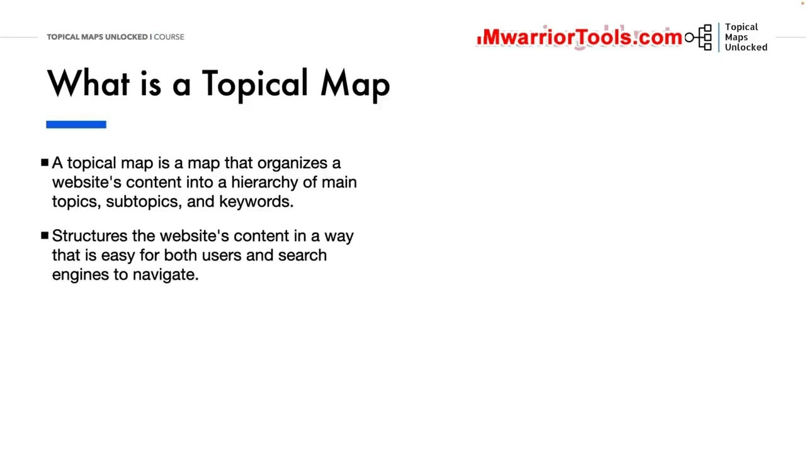
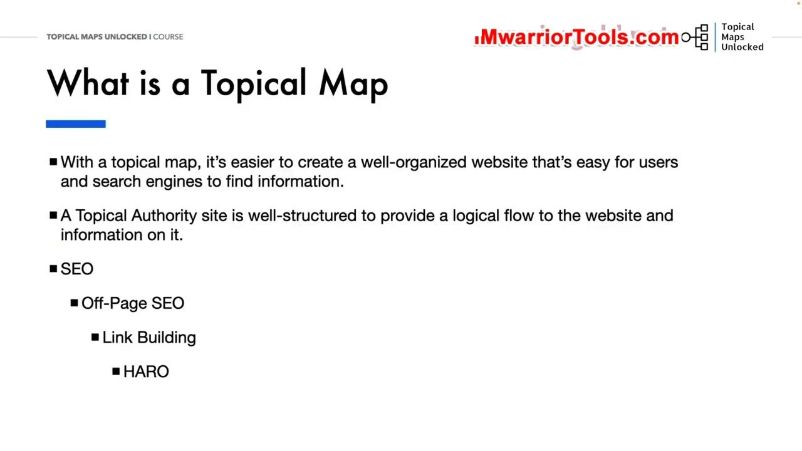
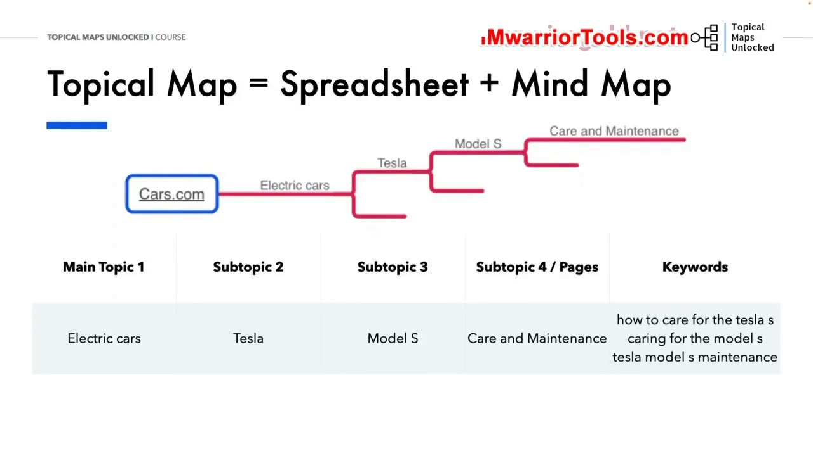
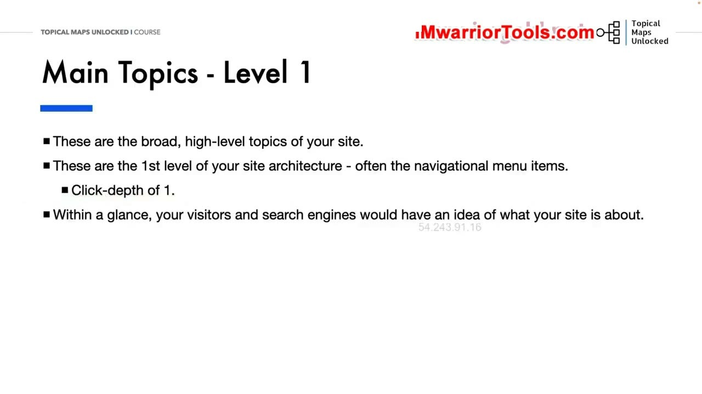
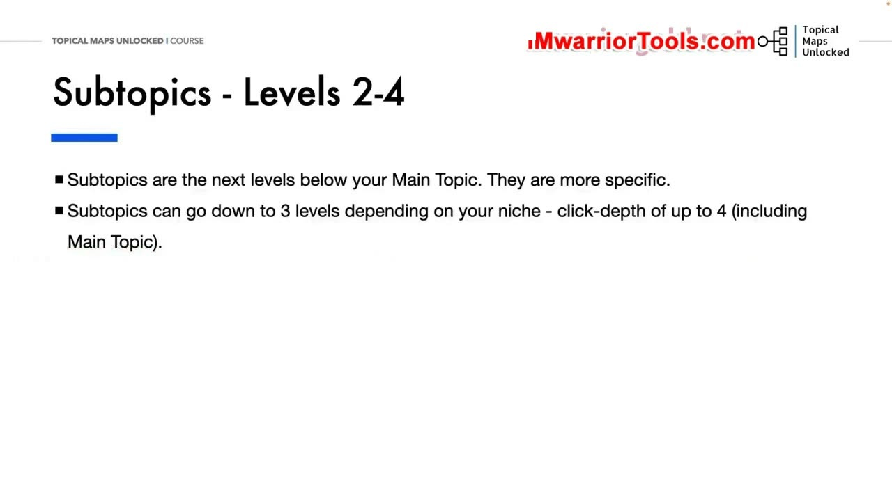
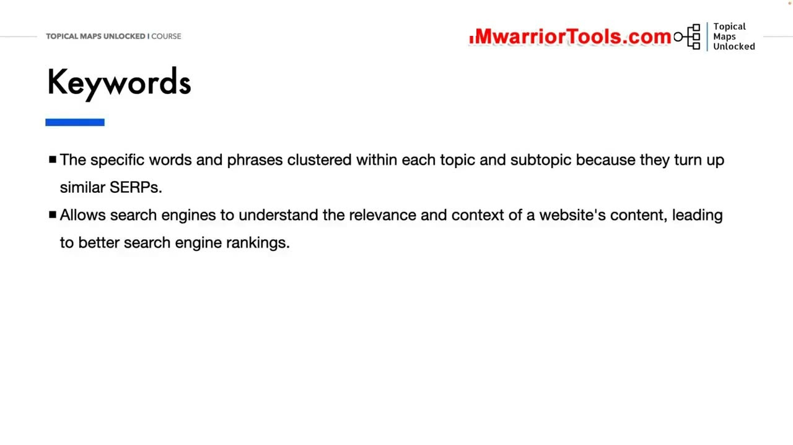
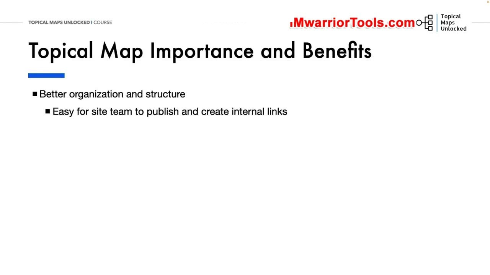

What is a Topical Map
1. Bản chất của Topical Map: Bản đồ phân cấp tổ chức nội dung website
Trong học phần này, chúng ta chính thức bước vào trái tim và linh hồn của toàn bộ khóa học: Topical Map (Bản đồ chủ đề). Yoyao bắt đầu bài giảng bằng việc đưa ra định nghĩa chuẩn xác nhất: Topical Map là một bản đồ có cấu trúc dùng để tổ chức toàn bộ nội dung của một trang web thành một hệ thống phân cấp rõ ràng (hierarchy) bao gồm các chủ đề chính (main topics), các chủ đề phụ (subtopics) và các cụm từ khóa (keywords) có liên quan chặt chẽ.
Nó cấu trúc nội dung trang web theo cách tối ưu nhất giúp cho cả hai đối tượng trọng yếu: người dùng thực tế và bot của các công cụ tìm kiếm đều có thể dễ dàng điều hướng, khám phá và tìm thấy thông tin phù hợp nhất trong thời gian ngắn nhất mà không gặp bất kỳ trở ngại nào.
Ngược lại, một website không có cấu trúc tổ chức bài bản, xuất bản bài viết một cách ngẫu hứng và vô tổ chức sẽ khiến người dùng cảm thấy như bị lạc vào một mê cung thông tin hỗn loạn. Tệ hơn nữa, các thuật toán thu thập dữ liệu của công cụ tìm kiếm cũng sẽ gặp muôn vàn khó khăn để nhận diện được đâu là chủ đề chuyên môn thực sự của trang web, dẫn đến việc thứ hạng không thể bứt phá.

2. Luồng thông tin logic và ví dụ phân cấp: SEO -> Off-Page -> Link Building -> HARO
Với một bản đồ chủ đề hoàn chỉnh, việc xây dựng một trang web có tổ chức chặt chẽ trở nên đơn giản và mạch lạc hơn rất nhiều. Một website có thẩm quyền chủ đề (Topical Authority site) luôn được cấu trúc bài bản để cung cấp một luồng thông tin logic (logical flow) xuyên suốt toàn bộ trải nghiệm đọc của khách truy cập.
Yoyao đưa ra một ví dụ minh họa cực kỳ trực quan về cấu trúc phân cấp 4 tầng điển hình trong lĩnh vực tiếp thị kỹ thuật số:
- Tầng 1 (Chủ đề chính cấp cao):
SEO(Tối ưu hóa công cụ tìm kiếm tổng thể). - Tầng 2 (Chủ đề phụ cấp 1):
Off-Page SEO(Các hoạt động tối ưu hóa bên ngoài trang web). - Tầng 3 (Chủ đề phụ cấp 2):
Link Building(Chiến lược xây dựng và thu hút liên kết ngược chất lượng). - Tầng 4 (Chủ đề chi tiết / Bài viết thực thi):
HARO(Help A Reporter Out - Kỹ thuật tìm kiếm cơ hội PR và liên kết báo chí uy tín).
Mỗi tầng phân cấp đều dẫn dắt người đọc đi một cách tự nhiên từ các khái niệm vĩ mô, bao quát cho đến các hành động và công cụ thực thi chi tiết, tạo ra sự mạch lạc tuyệt đối trong cấu trúc tư duy thông tin của người học.

3. Bản đồ chủ đề dưới dạng Sơ đồ tư duy và Bảng tính: Case Study Cars.com
Để xây dựng, trực quan hóa và quản trị bản đồ chủ đề trong thực tế, Yoyao hướng dẫn kết hợp hai công cụ bổ trợ đắc lực cho nhau: Spreadsheet (Bảng tính) và Mind Map (Sơ đồ tư duy).
Trong ví dụ thực tế phân tích cấu trúc của một website ô tô lớn như Cars.com:
- Main Topic 1 (Chủ đề chính):
Electric cars(Phân khúc xe điện). - Subtopic 2 (Hãng sản xuất):
Tesla(Thương hiệu xe điện Tesla). - Subtopic 3 (Dòng xe cụ thể):
Model S(Dòng sedan cao cấp Tesla Model S). - Subtopic 4 / Trang bài viết chi tiết:
Care and Maintenance(Bảo dưỡng, sạc pin và chăm sóc xe) hoặc các phiên bản hiệu năng cao nhưModel S Plaid. - Keywords (Cụm từ khóa mục tiêu): "how to care for the tesla s", "caring for the model s", "tesla model s maintenance checklist".
Sơ đồ tư duy giúp toàn bộ đội ngũ tiếp thị nhìn thấy bức tranh tổng thể đa chiều về mối liên hệ giữa các nhánh cây nội dung, trong khi bảng tính đóng vai trò là cơ sở dữ liệu chi tiết lưu trữ các chỉ số từ khóa, độ khó, lượng tìm kiếm và phân công người viết cụ thể.

4. Chủ đề chính (Level 1) và Độ sâu nhấp chuột (Click-depth of 1)
Main Topics (Chủ đề chính - Level 1) là những chủ đề rộng nhất, mang tính định hướng cấp cao nhất của toàn bộ trang web. Đây chính là tầng móng đầu tiên trong kiến trúc trang web của bạn và thường xuất hiện trực tiếp dưới dạng các mục trên thanh menu điều hướng chính (navigational menu items) trên header.
Đặc điểm kỹ thuật cốt lõi của tầng Level 1:
- Click-depth = 1: Người dùng chỉ cần đúng 1 cú nhấp chuột duy nhất từ trang chủ (Homepage) là có thể tiếp cận ngay trang trung tâm của chủ đề chính này.
- Nhận diện tức thì chỉ trong một cái liếc mắt: Chỉ cần nhìn lướt qua các đề mục Level 1 trên thanh menu trong 3 giây, cả người dùng mới lẫn bot của các công cụ tìm kiếm sẽ hiểu ngay lập tức website này chuyên sâu về những trụ cột nào.
Ví dụ trên một website chuyên về thiết bị nhà thông minh (Smart Home site), các chủ đề chính Level 1 xuất hiện trên thanh menu điều hướng sẽ bao gồm: Smart Thermostats (Bộ điều nhiệt thông minh), Smart Appliances (Thiết bị gia dụng thông minh), Smart Security (Hệ thống camera và an ninh thông minh), và Voice Assistants (Các thiết bị trợ lý ảo điều khiển bằng giọng nói).

5. Các cấp chủ đề phụ (Levels 2-4) và Giới hạn độ sâu tối đa 4 cú nhấp chuột
Subtopics (Chủ đề phụ - Levels 2-4) là các cấp độ tiếp theo nằm tuần tự bên dưới Chủ đề chính. Chúng có nhiệm vụ đi sâu vào từng ngách nhỏ, từng sản phẩm cụ thể và các hướng dẫn kỹ thuật chi tiết hơn.
Tùy thuộc vào quy mô và độ sâu kiến thức của từng ngành hàng, các chủ đề phụ có thể phân nhánh xuống từ 2 đến 3 tầng (tạo thành độ sâu nhấp chuột Click-depth tối đa là 4, tính từ trang chủ qua Main Topic xuống bài viết cuối cùng). Yoyao nhấn mạnh quy tắc vàng trong kiến trúc website: Tuyệt đối không nên để bất kỳ bài viết nào nằm sâu quá 4 cú nhấp chuột từ trang chủ. Việc chôn giấu nội dung quá sâu sẽ làm bot tìm kiếm gặp khó khăn khi thu thập dữ liệu và khiến người dùng nản lòng bỏ cuộc.
Ví dụ phân cấp chi tiết 4 tầng hoàn chỉnh trong ngách Smart Home:
- Main Topic 1 (Level 1):
Smart Thermostats(Bộ điều nhiệt thông minh - Click-depth 1) - Subtopic 2 (Level 2):
Google Nest(Hệ sinh thái điều nhiệt của Google Nest - Click-depth 2) - Subtopic 3 (Level 3):
Google Nest Learning Thermostat(Dòng sản phẩm học thói quen người dùng - Click-depth 3) - Subtopic 4 (Level 4):
How to Reset(Hướng dẫn chi tiết cách khôi phục cài đặt gốc khi gặp sự cố - Click-depth 4)
Cấu trúc 4 tầng này vừa đủ sâu để giải quyết triệt để nhu cầu người dùng, vừa đủ nông để bảo toàn dòng chảy sức mạnh liên kết (link equity) từ trang chủ xuống từng trang con.

6. Gom cụm từ khóa (Keyword Clustering) dựa trên SERP tương đồng
Tầng cuối cùng gắn liền mật thiết với mỗi chủ đề và chủ đề phụ là Keywords (Từ khóa tìm kiếm). Đây là những từ ngữ và cụm từ cụ thể mà người dùng thực tế gõ vào thanh tìm kiếm, được gom nhóm lại với nhau (clustered) trong từng bài viết.
Yoyao nhấn mạnh nguyên tắc gom cụm từ khóa dựa trên trang kết quả tìm kiếm: Những từ khóa nào kích hoạt các kết quả tìm kiếm tự nhiên (SERP) tương tự nhau từ 3 đến 5 kết quả trở lên thì bắt buộc phải được nhóm chung vào một bài viết duy nhất. Điều này cho phép công cụ tìm kiếm hiểu được ngữ cảnh bao quát của nội dung mà không bị bối rối.
Nguyên tắc gom cụm này giúp ngăn chặn triệt để hiện tượng ăn thịt từ khóa (Keyword cannibalization) - tình trạng hai bài viết trên cùng một website cạnh tranh triệt tiêu lẫn nhau trên Google. Nhờ đó, chỉ với một bài viết chất lượng cao và bao phủ ngữ nghĩa toàn diện, trang web của bạn hoàn toàn có thể xếp hạng đồng thời cho hàng chục, thậm chí hàng trăm từ khóa biến thể khác nhau.

7. Tầm quan trọng và Lợi ích to lớn của Topical Map đối với Website
Tổng kết bài học, Yoyao đúc kết lại 4 lợi ích mang tính chiến lược sống còn mà một Topical Map chuẩn mực mang lại cho sự phát triển của website:
- Tổ chức và cấu trúc website hoàn hảo (Better organization and structure): Biến một kho tài nguyên khổng lồ thành một hệ thống phân cấp ngăn nắp, khoa học, giúp người quản trị website luôn nắm rõ vị trí của từng bài viết.
- Dễ dàng cho đội ngũ xuất bản và xây dựng liên kết nội bộ (Easy for site team to publish and internal link): Giúp các cây bút và biên tập viên biết chính xác bài viết mới thuộc về Silo nào, cần liên kết ngược về trang trụ cột nào và sử dụng anchor text gì một cách tự nhiên nhất để tối ưu dòng chảy sức mạnh.
- Nâng tầm trải nghiệm người dùng (Better user experience): Độc giả có thể dễ dàng tìm thấy câu trả lời chính xác cho thắc mắc của họ, đồng thời được dẫn dắt khám phá thêm các chủ đề liên quan, giữ chân họ ở lại lâu hơn và giảm tỷ lệ thoát trang đáng kể.
- Tăng trưởng thứ hạng tự nhiên bền vững (Better search engine rankings): Cung cấp tín hiệu rõ ràng và nhất quán cho Google thấy website của bạn có sự bao phủ chủ đề toàn diện ở mức độ chuyên gia, từ đó đưa website trở thành thẩm quyền đáng tin cậy nhất trong ngành.

Nguồn và đối chiếu
- Topical Maps Unlocked 2.0 · 01-What is a Topical Map (Video bài học chính).
- Đối chiếu ngữ nghĩa với bản tiếng Anh: Bản Tiếng Anh/04-Tropical Maps Module/01-What is a Topical Map.mp4 (xác thực các ví dụ phân cấp Cars.com, Smart Home và nguyên tắc Click-depth tối đa là 4).